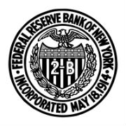
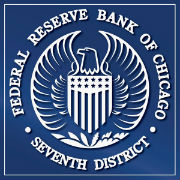

The Board of Governors, located in Washington, D.C., oversees the Federal Reserve System. It is made up of seven members who are appointed by the President and cofirmed by the Senate.
The Boston Federal Reserve Bank serves the Federal Reserve District which consists of Connecticut(excluding Farirfield County), Massachusetts, Maine, New Hampshire, Rhode Island and Vermont.

Federal Reserve Bank of New York - serves the Second Federal Reserve District which consists of New York state, the 12 northern counties of New Jersey, Fairfield County in Connecticut, Puerto Rico and the U.S Virgin Islands.
Federal Reserve Bank of Philadelphia - serves the Third Federal Reserve District which consists of eastern Pennsylvania, southern New jersey, and Delaware.
Federal Reserve Bank of Cleveland - serves the Fourth Federal reserve District which consists of Ohio, western Pennsylvania, the northern panhandle of West Virginia, and eastern Kentucky.
Federal Reserve Bank of Richmond - serves the Fifth Federal Reserve District which consists of Virginia, Maryland, the Carolinas, the District of Columbia and most of West Virginia.
Federal Reserve Bank of Atlanta - serves the Sixth Federal Reserve District which consists of Alabama, Florida, Georgia, and portions of Louisiana, Mississippi, and Tennessee.

Federal Reserve Bank of Chicago - serves the Seventh Federal Reserve District which consists of Iowa, and most of Illinois, Indiana, Michigan and Wisconsin.
Federal Reserve Bank of St. Louis - serves the Eighth Federal Reserve District which consists of Arkansas and portions of six other states: Missouri, Mississippi, Tennessee, Kentucky, Indiana and Illinois. The St. Louis Federal Reserve Bank serves most of estern Missouri and southern Illinois.
Federal Reserve Bank of Minneapolis - serves the Ninth Federal Reserve District which consists of Minnesota, Montana, North and South Dakota, 26 counties in northwestern Wisconsin and the Upper Peninsula of Michigan.
Federal Reserve Bank of Kansas City - serves the Tenth District which consists of Colorado, Kansas, Nebraska, Oklahoma, Wyoming, northern New Mexico, and Westrn Missouri.
Federal Reserve Bank of Dallas - serves the Eleventh Federal Reserve District which consists of Texas, northern Louisiana and southerns New Mexico.
Federal Reserve Bank of San-Francisco - serves the Twelfth Federal Reserve District, which consists of Alaska, Arizona, California, Hawaii, Idaho, Nevada, Oregon, Utah, Washington, Guam, American Samoa, and Northern Mariana Islands.
More about Board of Governors
20th Street and Constitution Avenue NW
Washington, District of Columbia 20551
More about Federal Reserve Bank of Boston
600 Atlantic Avenue
Boston, Massachusetts 02210
More About New York Federal Reserve Bank
33 Liberty Street
New York, New York 10045
More about Federal Reserve Bank of Philadelphia
Ten Independence Mall
Philadelphia, Pennsylvania 19106-1574
More about Federal Reserve Bank of Cleveland
701 East Byrd Street
Richmond, Virginia 23219
More about Federal Reserve Bank of Richmond
1455 E. Sixth St.
Cleveland, Ohio 44114-2566
More about Federal Reserve Bank of Atlanta
1000 Peachtree Street NE
Atlanta, Georgia 30309-4470
More about Federal Reserve Bank of Chicago
230 South LaSalle Street
Chicago, Illinois 60604-1413
More about Federal Reserve Bank of St.Louis
One Federal Reserve Bank Plaza
Saint Louis, Missouri 63102
More about Federal Reserve Bank of Minneapolis
90 Hennepin Avenue
Minneapolis, Minnesota 55401
More about Federal Reserve Bank of Kansas City
1 Memorial Drive
Kansas City, Missouri 64198-0001
More about Federal Reserve Bank of Dallas
2200 N. Pearl Street
Dallas, Texas 75201
More about Federal Reserve Bank of San Francisco
101 Market Street
San Francisco, California 94105